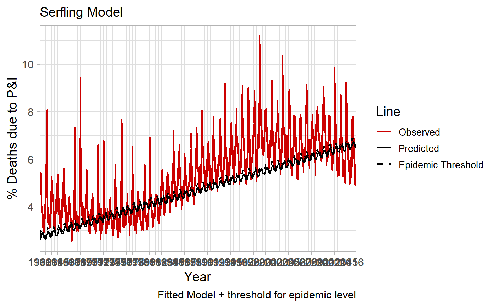

The following software is a collection of R functions and datasets to examine attributable influenza morbidity and mortality. The software draws from multiple peer-reviewed studies, as well as unpublished SAS and R code developed by other researchers (see acknowledgements).
# install from CRAN: (Not implemented yet)
install.packages("flumodelr")
# Or the the development version from GitHub:
# install.packages("devtools")
devtools::install_github("kmcconeghy/flumodelr")This package relies heavily on the suite of packages and programming termed “Tidyverse”, e.g. “dplyr”, “lubridate”, that must be installed for proper functioning.
The primary goal of this package is to provide a toolkit for researchers who wish to estimate the attributable proportion of an outcome due to influenza morbidity and mortality. Conceptually this is achieved through estimating a baseline rate of the outcome in the absence of influenza, then using a measure of influenza endemicity to identify the marginal rate due to influenza morbidity. The particular measure of influenza endemicity and outcome being modelled can be arbitrarily specified by the user.
fludta <- fludta
fludta## # A tibble: 261 x 9
## year week fludeaths alldeaths perc_fludeaths yrweek_dt prop_flupos
## <int> <int> <int> <int> <dbl> <date> <dbl>
## 1 2010 42 726 11269 6.44 2010-10-17 0.0133
## 2 2010 43 720 11204 6.43 2010-10-24 0.0193
## 3 2010 44 739 11115 6.65 2010-10-31 0.0173
## 4 2010 45 724 10321 7.01 2010-11-07 0.0231
## 5 2010 46 740 11506 6.43 2010-11-14 0.0327
## 6 2010 47 516 8543 6.04 2010-11-21 0.0399
## 7 2010 48 796 12299 6.47 2010-11-28 0.0691
## 8 2010 49 863 12578 6.86 2010-12-05 0.0837
## 9 2010 50 816 12029 6.78 2010-12-12 0.0863
## 10 2010 51 713 9655 7.38 2010-12-19 0.130
## # ... with 251 more rows, and 2 more variables: week_in_order <int>,
## # epi <lgl>flu_fit <- fluserf(fludta, outc = perc_fludeaths, time = yrweek_dt)Assumes epidemic influenza period of Sept. - May. Fits a cyclical trend line, y0, along with an threshold limit for epidemicity, y0_ul.
flu_fit %>% select (year, week, perc_fludeaths, y0, y0_ul)## # A tibble: 261 x 5
## year week perc_fludeaths y0 y0_ul
## <int> <int> <dbl> <dbl> <dbl>
## 1 2010 42 6.44 6.50 6.71
## 2 2010 43 6.43 6.56 6.80
## 3 2010 44 6.65 6.63 6.90
## 4 2010 45 7.01 6.70 7.00
## 5 2010 46 6.43 6.77 7.11
## 6 2010 47 6.04 6.85 7.21
## 7 2010 48 6.47 6.92 7.32
## 8 2010 49 6.86 6.99 7.42
## 9 2010 50 6.78 7.07 7.52
## 10 2010 51 7.38 7.13 7.61
## # ... with 251 more rowsAn convenience function for plotting the above fit lines.
fluplot(flu_fit, xvar=yrweek_dt, perc_fludeaths, y0, y0_ul,
ylab="% Deaths due to P&I", title="Serfling Model")
Several companion documents have been written to assist interested readers with the background and use of the package. We suggest you start here: Introduction to flumodelr or if the package is installed:
vignette("01-Introduction", "flumodelr")This package is in the early stages of development. Many features may change in a short amount of time.
The basic Serfling model is now functional. Current efforts are focused on modern virology models and comparing results to other researchers.
We hope to increase the number of modelling options periodically including, bayesian estimation, advancing forecasting, and machine learning.
Serfling RE. Methods for current statistical analysis of excess pneumonia-influenza deaths. Public Health Rep. 1963 Jun; 78(6): 494 - 506. Pubmed Link
Thompson WW1, Weintraub E, Dhankhar P, Cheng PY, Brammer L, Meltzer MI, Bresee JS, Shay DK. Estimates of US influenza-associated deaths made using four different methods. Influenza Other Respir Viruses. 2009 Jan;3(1):37-49. Pubmed Link
The programming was derived with guidance and example code from the following individuals.
Yinong Young-Xu and Ellyn Russo. White River Junction VA Medical Center, VT. Department of Veteran Affairs.
Baltazar Nunes. Researcher, Epidemiological Research Unit (Head), Departament of Epidemiology.